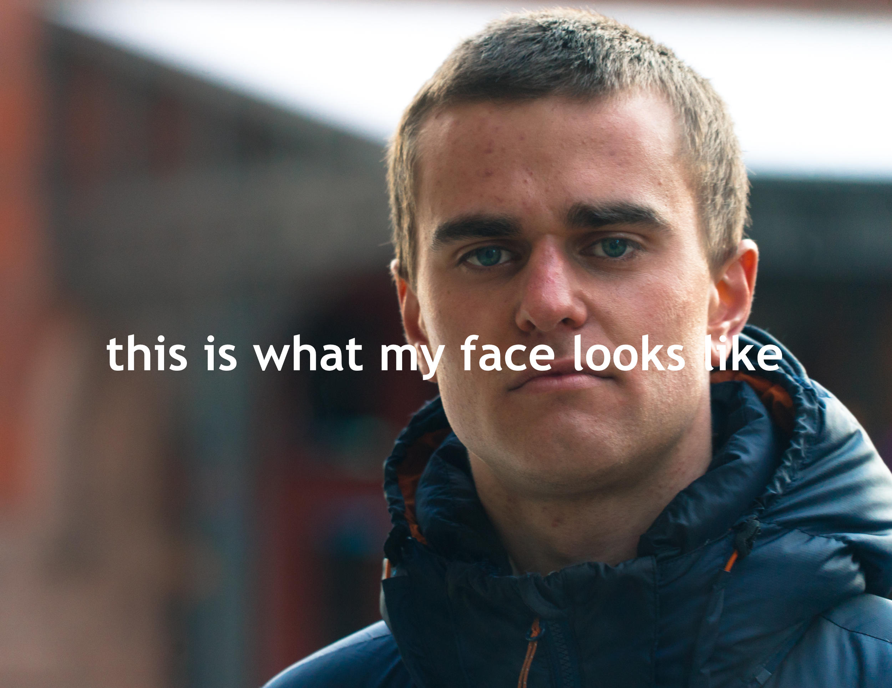

W4RNER

Me without the Facebook gargoyle, Chicago 2017
I'm now enjoying social media free from ads & spyware from Micro.Blog (and occasionally MeWe).
Papers
|
Talks
|
Videos
Old Page
|
New Compact Home Page
-----
A History of the name "Meta" |
Mandatory Gram Pix
-----
Search my blog!
Tamara Munzner's 2nd site from when Zuck was first mashing faces at Harvard
is the inspiration for this Dark Mode "meta" profile page.
this page lived at Facebook.LaurenceWarner.com until Nov '21. From April '20, it had 124 unique visitors.
Last modified: Wed Nov 3 18:31:29 GMT 2021